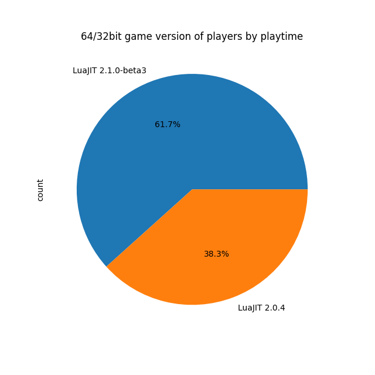
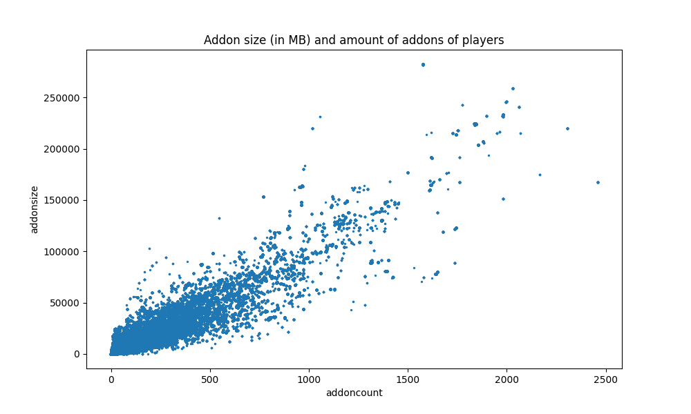
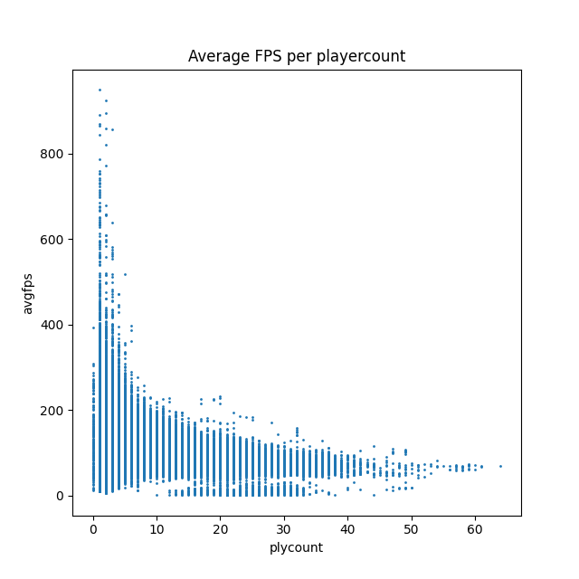

istina | gmod statistics
About
Istina is my project name for a gmod statistics addon that collects a lot of data about the server and players.
This page exists to showcase a few statistics about the data collected so far.
The banner and icon have been specially drawn for this project by Holly.
About the data
Statistics
Disclaimer: All these statistics are, if not otherwisely stated, done by calculating over all data, and not over unique players.
This means that the longer you play, the more your statistics count.
In the pictures you can easily distinguish between "playtime" and "unique" type of statistics by the file name.
Screen Resolution
The above image shows the screen resolution count of players by playtime. (+50.000 data points)
More than 3/4th of players are playing in FullHD, while the other ones are mainly split into higher resolutions with different aspect ratios.
We can also take a look at the unique players version of this graph:
As you can see above, the screen resolutions of only unique players (full pie chart consists of ~600 data points) is still more than 3/4th of FullHD players.
This means that if you write your HUD only with FullHD screen resolution in mind then you are only neglecting less than 1/4th of the playerbase.
Gmod 64/32 bit versions
All the servers in this statistic do not tell players to upgrade to 64bit. This means this statistic is not influenced by specific servers pushing their players to one side.
If we look at the above pie chart we can see that, by playtime, a lot more players use the 64bit version of Garry's Mod than the 32bit version.

But if we look at the unique version of this graph then we can see that the around 600 players split up into nearly exactly 50/50.
This means it is not save to use 64bit-only features, as nearly half of the players are still using the 32bit version of the game. These features are, for example: Google Drive websites in the ingame browser.
Addons of players

As the above scatter chart shows, most of the players have less than ~250 addons which are, combined in size, less than ~25GB in size.
One special case is on the most top left corner, which shows that one player has over 2000 addons installed, which have a combined size of over 200GB.
Average FPS

The above graph shows the average fps of every player on the server combined on the Y axis and the amount of players on the server on the X axis.
This not only shows that im missing data on the right side, but also that the FPS on average decreases the more players are on the server.
The above graph shows the average FPS of a player on the Y axis and the current session playtime on the X axis.
This shows that the longer you play, the less FPS on average you have.
Source
All the above statistics have been collected with my self-written, open source Garry's Mod addon called "istina" (or, if installed on your server, probably named luctus_monitor).
Github link: https://github.com/OverlordAkise/istina
All the data processed is anonymized.
The statistical analysis was done with Python3 via Jupyterlab, using pandas for data storage and matplotlib for creating the graphs and charts.